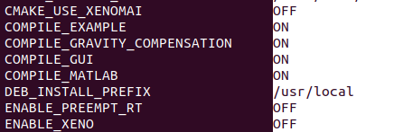

Installation
Git and CMake
Install git package:
sudo apt update
sudo apt install -y git gitg git-gui
git --version
sudo apt install -y file build-essential curl cmake cmake-curses-gui
MatLogger
Install matlogger library:
sudo apt install -y libmatio-dev libfmt-dev libgtest-dev python3-pip python3-pybind11
git clone https://github.com/ADVRHumanoids/MatLogger2 (actual branch: v1.5.0)
Zmq, Protobuf, Msgpack, Boost
Install mechanism protocols:
sudo apt-get install -y libzmq3-dev
sudo apt install protobuf-compiler
sudo apt install libmsgpack-dev
sudo apt-get install libboost-system-dev
YAML
Install yaml utils:
sudo apt install libyaml-cpp-dev
QT and GUI Tools
Install GUI tools:
sudo apt install -y qttools5-dev libqt5charts5-dev qtdeclarative5-dev libtiff-dev uuid-dev libcurl4-openssl-dev
Matlab and Simulink
Install Matlab/Simulink tools:
sudo dpkg --install ecat-client-advr/src/matlab/ec_block/external/blockfactory/(OS)/blockfactory_package-0.8.3-r0.0.1-amd64.deb
Build and install the EtherCAT Client Library from sorce
- Prepare the workspace::
ecat-client-advr/scripts/.create_ws.sh [name_ws] [dir_ws, default=HOME]
Source into .bashrc the new workspace:
source ~/name_workspace/setup.bash
Download and compile EtherCAT Client:
cd src/
git clone https://github.com/Advanced-Robotics-Facility/ecat-client-advr
cd ../build
mkdir -p ecat-client-advr && cd ecat-client-advr
(compile and build the client)
Note: Select the variable to compile (EtherCAT Client Examples an Gravity compensation, the EtherCAT Client GUI and EtherCAT client block [Matlab/Simulink]):

Note: It’s possible to compile the EtherCAT Client Library with Xenomai Real-Time OS or Preempt-RT Real Times OS.
Install the EtherCAT Client Library from debian package
Download from this site the last version of EtherCAT Client Debian Package and install it:
https://github.com/Advanced-Robotics-Facility/ecat-client-advr/releases
Install EtherCAT Client Librarys:
sudo dpkg --install ecat-client-advr_nrt_package-0.0.1-r0.0.1-amd64.deb